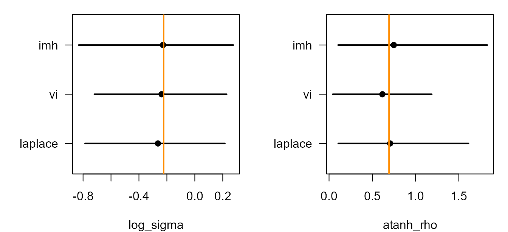

Installation is covered in Get started.
What tgmrf() is
tgmrf() lets a user script define a Gaussian
Markov Random Field (GMRF) latent block and plug it into tulpa’s
inference layers as a first-class latent term. It is the latent-side
dual of LikelihoodSpec: that interface lets a downstream
package own the observation model; tgmrf() lets a single R
script own one latent block.
The contract is two closures and an init vector:
my_block <- tgmrf(
Q = function(theta) { ... returns dgCMatrix ... },
prior = function(theta) { ... returns scalar log-density ... },
init = c(...)
)The closures are called numerically: no autodiff, no DSL, no codegen. For a Gaussian latent block
the score and Hessian in are closed-form:
So tulpa’s Laplace inner step only needs Q(theta) and
mu(theta) at numeric theta. Hyperparameter
gradients (d/d theta) come from finite differences,
typically 2-5 extra Q evaluations per outer step, which is
cheap when Q is sparse. The same block reaches every
inference tier: Laplace, IMH-Laplace, NUTS, VI.
How a block becomes a fitted model: the algorithm
A tgmrf object carries everything the engine needs and
nothing it does not. The construct is a templated GMRF latent
block: templated because the same machinery integrates any
precision family the closures describe, latent because the block
contributes a vector
that lives under the linear predictor rather than in the likelihood.
When you call tgmrf(), the constructor evaluates
Q(init) exactly once. That single call does three jobs at
registration time. It catches user errors early (a Q that
throws, returns a dense matrix, or returns a non-square or asymmetric
matrix all stop here with a specific message). It infers
n_latent from nrow(Q(init)). And it captures
the sparsity pattern, the set of stored nonzero positions, which the
inner solver reuses at every later theta so the symbolic
Cholesky factorisation is computed once, not per grid point.
The block records theta_dim and theta_names
from init (named elements become the canonical
hyperparameter names; unnamed ones get theta_1,
theta_2, …), validates the optional mu,
graph, bounds, and obs_idx
arguments against the inferred shape, and stores the two closures by
reference. Nothing is differentiated, compiled, or parsed. The returned
object has class c("tgmrf", "tulpa_latent_block") and a
type = "tgmrf" registry key that the nested-Laplace
dispatcher recognises.
At fit time the integration follows a fixed sequence. The steps below
describe what tulpa_nested_laplace() does with a
tgmrf block; the IMH, VI, and NUTS adapters share the inner
machinery and differ only in how they explore theta.
-
Build the outer grid over
theta. If you suppliedbounds, the driver lays a per-axis grid betweenlowerandupper. The default resolution is 5 points per axis; the IMH, VI, and NUTS adapters expose this aspilot_axis_points. With hyperparameters the default grid is cells, so a two-parameter block is a 25-cell grid. You can also hand the driver an explicit grid matrix. -
For each grid point
theta_k, run the inner Laplace solve. The driver assembles the joint mode of giventheta_kby Newton iteration. Each Newton step needs the score and Hessian in . The -part comes fromQ(theta_k)andmu(theta_k)in closed form; the likelihood part comes from the chosenfamily(or a model-suppliedlikelihood). Because the sparsity pattern was captured at registration, the Cholesky of the system reuses the same symbolic factor at every grid point. -
Score the grid point. At the inner mode the driver
evaluates the Laplace approximation to the log marginal likelihood
and adds the user
prior(theta_k). This single scalar per grid point is what$log_marginalholds. -
Integrate over the grid. The per-cell log-marginals
become normalised integration weights (
$weights), and the driver reports posterior moments of every hyperparameter as weighted means and SDs ($theta_mean,$theta_sd) plus weighted quantiles. -
Diagnose the outer approximation. With the grid
integrated, the driver fits a Gaussian proposal to the hyperparameter
posterior and importance-samples it to compute the outer
Pareto-
(
$pareto_k); see the convergence section.
The adapters reuse the inner mode and precision as a proposal. VI
fits a Gaussian to the Laplace theta marginal. NUTS samples that
deterministic marginal using finite-difference gradients, then computes
an importance correction. IMH uses a t proposal over theta and accepts
against an unbiased importance-sampling estimate of the true marginal
likelihood, multiplied by prior(theta). The
log_marginal returned by the inner solver already includes
that prior. Each importance particle is scored against the exact
observation likelihood and the Gaussian priors on beta and the latent
block. The beta prior is the engine default,
N(0, 2.5^2).
For IMH, the likelihood estimate and selected joint particle are
retained on rejection. For NUTS, the ratios of the estimated true
marginal to its Laplace approximation are Pareto-smoothed by
tulpa_psis(). Whole joint rows are resampled only when
k-hat passes the reliability gate. Each fit records its actual target in
$target.
A worked example: periodic AR1
The smallest non-trivial GMRF tulpa does not ship is a periodic AR1 (useful for diurnal, seasonal, or phase-wrapped data). The precision is tridiagonal with wrap-around:
Reparameterise to unconstrained
theta = (log_sigma, atanh_rho):
periodic_ar1 <- function(n) {
tgmrf(
Q = function(theta) {
sigma <- exp(theta[1]); rho <- tanh(theta[2])
d <- rep((1 + rho^2) / sigma^2, n)
o <- rep(-rho / sigma^2, n)
M <- Matrix::bandSparse(n, k = c(-1, 0, 1),
diagonals = list(o, d, o))
M[1, n] <- M[n, 1] <- -rho / sigma^2 # wrap
methods::as(methods::as(M, "generalMatrix"), "CsparseMatrix")
},
prior = function(theta) {
dnorm(theta[1], 0, 1, log = TRUE) + # weak on log_sigma
dnorm(theta[2], 0, 1, log = TRUE) # weak on atanh_rho
},
init = c(log_sigma = 0, atanh_rho = atanh(0.3)),
bounds = list(lower = c(log(0.3), atanh(0.0)),
upper = c(log(3.0), atanh(0.9))),
name = "periodic_ar1"
)
}The optional bounds argument places the outer grid and
sampler pilot. IMH and NUTS explore the support of
prior(theta). The prior closure is a
log-density on theta; a proper prior such as the one above makes the
scale posterior well defined even with sparse observations per latent
node.
The closure shape is the contract. Q takes one numeric
vector theta and returns a square symmetric sparse matrix;
prior takes the same theta and returns one
finite scalar; init is the numeric vector both closures
expect. The reparameterisation to log_sigma and
atanh_rho is deliberate: it maps the natural constraints
and
to the whole real line, so the outer grid, the L-BFGS search, and the
leapfrog steps all operate on unconstrained coordinates and never
propose an invalid precision. The bounds you give are in
those unconstrained units too. Use names on init and they
propagate through every fit as the reported parameter names.
Simulate from the block
n <- 40L
theta_true <- c(log(0.8), atanh(0.6))
blk <- periodic_ar1(n)
# z | theta_true ~ N(0, Q(theta_true)^{-1})
Q_true <- blk$Q(theta_true)
L <- Matrix::Cholesky(Q_true)
z_true <- as.numeric(Matrix::solve(L, rnorm(n), system = "Lt"))
# y_i ~ Poisson(exp(beta_0 + z_i))
beta0 <- 0.3
y <- rpois(n, exp(beta0 + z_true))
X <- matrix(1, n, 1L)Tier 2 (structured): nested Laplace
fit_lap <- tulpa_nested_laplace(
y = y, n_trials = rep(1L, n), X = X,
prior = blk,
family = "poisson"
)
#> [nested-laplace] 1/25 cells (4%) | elapsed 0s | ETA >=0s | 0.00s/cells
#> [nested-laplace] 19/19 cells (100%) | elapsed 0s | ETA done | 0.00s/cells
summary(fit_lap)$hyperparameters # posterior over the outer grid
#> parameter mean sd median ci_lo ci_hi
#> 1 log_sigma[periodic_ar1] -0.2638947 0.2558262 -0.2557200 -0.7856376 0.2150724
#> 2 atanh_rho[periodic_ar1] 0.7060776 0.3413815 0.6869356 0.1065503 1.6119902Tier 2 (structured): Pathfinder VI
tulpa_tgmrf(mode = "vi") runs L-BFGS on
log_marginal(theta) and fits a Gaussian at the optimum.
Same tier as the nested-Laplace posterior but gives you a full
covariance matrix rather than a discrete grid.
fit_vi <- tulpa_tgmrf(
y = y, n_trials = rep(1L, n), X = X, block = blk,
family = "poisson", mode = "vi",
n_draws = 800L
)
colMeans(posterior_sample(fit_vi))
#> beta_1 log_sigma atanh_rho
#> 0.4572538 -0.2380514 0.6164617
summary(fit_vi)$reliability$elbo
#> [1] -80.36344Tier 1 (exact): IMH-Laplace
Pseudo-marginal independence MH targets the true joint posterior. Its
outer proposal is a multivariate t centred on the Laplace mode, with the
inverse curvature there as its scale matrix. One inner mode/precision
solve and fit$is_particles exact joint-density evaluations
give an unbiased marginal-likelihood estimate at each proposed theta.
Repeated estimates at the outer mode calibrate the particle count before
the chain starts. fit$log_estimate_sd reports the measured
log-estimate SD.
fit_imh <- tulpa_tgmrf(
y = y, n_trials = rep(1L, n), X = X, block = blk,
family = "poisson", mode = "imh",
n_iter = 1200L, warmup = 400L
)
colMeans(posterior_sample(fit_imh))
#> beta_1 z_1 z_2 z_3 z_4 z_5
#> 0.36907372 -0.24628268 -0.60706944 -1.08465777 -1.17986637 -1.01350588
#> z_6 z_7 z_8 z_9 z_10 z_11
#> -0.55074092 -0.44639650 0.94831742 1.56391760 0.89597353 0.28026772
#> z_12 z_13 z_14 z_15 z_16 z_17
#> -0.25451376 0.73761169 1.34549188 1.32358467 0.17766541 0.24707901
#> z_18 z_19 z_20 z_21 z_22 z_23
#> -0.32605650 -0.77635273 -0.76390265 0.02271382 0.31796305 -0.03789370
#> z_24 z_25 z_26 z_27 z_28 z_29
#> -0.61352013 -0.27974327 0.08323175 0.55872247 -0.16814210 -0.24309193
#> z_30 z_31 z_32 z_33 z_34 z_35
#> 0.07382831 0.05106142 -0.39853762 0.28647538 0.06387648 0.87466874
#> z_36 z_37 z_38 z_39 z_40 log_sigma
#> 0.81215073 -0.57601222 -1.11609392 -1.14849347 -0.92178565 -0.22751687
#> atanh_rho
#> 0.74805165
summary(fit_imh)$reliability$mean_accept
#> [1] 0.57625Tier 2: NUTS with joint importance correction
tulpa_tgmrf(mode = "nuts") samples the Laplace theta
marginal and then computes a PSIS correction using an unbiased
likelihood estimate at each retained theta. $pareto_k,
$pareto_k_is_ess, $correction_applied and
$correction_declined report whether this correction passed
its gate. The gate uses the existing
min(1 - 1 / log10(S), 0.7) rule, where S is the number of
retained theta draws. A high or unavailable k returns the uncorrected
Laplace chain. control$is_correction = FALSE selects that
approximation explicitly. A corrected fit is a finite importance
approximation, labelled Tier 2 with
correction = "psis".
For a C++ block, mode = "nuts_joint" samples the true
density over (beta, z, theta) directly and provides a Tier
1 reference.
fit_nuts <- tulpa_tgmrf(
y = y, n_trials = rep(1L, n), X = X, block = blk,
family = "poisson", mode = "nuts",
n_iter = 200L, warmup = 100L,
max_depth = 4L
)
colMeans(posterior_sample(fit_nuts))Comparing posteriors
Nested Laplace and VI approximate the Laplace theta marginal. Pseudo-marginal IMH targets the true joint posterior and reports its theta marginal:
data.frame(
parameter = blk$theta_names,
true = theta_true,
laplace = summary(fit_lap)$hyperparameters$mean,
vi_mean = unname(colMeans(posterior_sample(fit_vi))[blk$theta_names]),
imh_mean = unname(colMeans(posterior_sample(fit_imh))[blk$theta_names])
)
#> parameter true laplace vi_mean imh_mean
#> 1 log_sigma -0.2231436 -0.2638947 -0.2380514 -0.2275169
#> 2 atanh_rho 0.6931472 0.7060776 0.6164617 0.7480516Grid resolution and the Gaussian theta fit affect nested Laplace and VI. IMH corrects the inner Laplace error by estimating the true marginal likelihood, and reports jointly corrected beta and z draws. Its cost is one inner solve and the calibrated number of density evaluations per iteration.
The means hide the spread. The figure puts each fit’s 95% interval for both hyperparameters next to the value the data were simulated at: the grid’s weighted quantiles for nested Laplace, the draw quantiles for VI and IMH.
hyp <- summary(fit_lap)$hyperparameters
tier <- c("laplace", "vi", "imh")
op <- par(mfrow = c(1, 2), mar = c(4, 5, 1, 1))
for (j in seq_along(blk$theta_names)) {
th <- blk$theta_names[j]
dr <- list(posterior_sample(fit_vi)[, th], posterior_sample(fit_imh)[, th])
lo <- c(hyp$ci_lo[j], vapply(dr, quantile, numeric(1), 0.025))
hi <- c(hyp$ci_hi[j], vapply(dr, quantile, numeric(1), 0.975))
mid <- c(hyp$mean[j], vapply(dr, mean, numeric(1)))
plot(mid, 1:3, xlim = range(lo, hi, theta_true[j]), ylim = c(0.5, 3.5),
pch = 19, yaxt = "n", xlab = blk$theta_names[j], ylab = "")
segments(lo, 1:3, hi, 1:3, lwd = 2)
axis(2, at = 1:3, labels = tier, las = 1)
abline(v = theta_true[j], col = "darkorange", lwd = 2)
}
par(op)The orange line marks the simulated value. The three sets of
intervals include their respective integration, approximation and Monte
Carlo errors. The intercept
is left out of the figure; the tulpa_tgmrf() adapters
report its draws in the columns before theta.
The mathematics
Fix notation first. The model has three layers. The data is
with a per-observation likelihood from family. A
fixed-effects design matrix
of dimension
carries coefficients
.
The latent block contributes a vector
where
is n_latent. An index vector obs_idx maps each
observation to a latent slot; when it is NULL the driver
assumes
and uses row order. The linear predictor for observation
is
and the mean is
for the family’s link
.
The hyperparameter vector is
with
equal to theta_dim, living on the unconstrained scale your
closures define.
The GMRF prior
A Gaussian Markov Random Field is a multivariate normal whose
precision matrix
is sparse, and the sparsity is the conditional-independence structure:
and
are conditionally independent given the rest exactly when
.
The block density is
where
is the mean vector (your mu closure, or zero when
mu is NULL) and
is the determinant. Taking logs,
The const absorbs the
factor, which does not depend on
or
and drops out of every gradient. Differentiating in
gives the closed-form score and Hessian quoted above:
and
.
This is why you never write gradient code for the latent block. The
Hessian in
is just
,
a constant in
,
so the latent part of the Newton system is exact, not an
approximation.
The precision parameterisation
The closure Q(theta) is the precision family. Whatever
structure you encode (AR1, periodic AR1, a random walk, a custom spatial
GMRF) lives entirely in how Q maps
to nonzero entries. The reparameterise step matters here. The natural
parameters of a precision are often positive scales or bounded
correlations, and the integrator works best on the whole real line, so
the convention is to define theta on an unconstrained scale
and transform inside Q. For the periodic AR1 above,
so that
and
hold automatically. The Jacobian of that transform is absorbed into your
prior(theta): because the prior is a log-density on the
unconstrained
,
you supply whatever density you want there directly and the engine does
not add a change-of-variables term. A flat
function(theta) 0 is a flat prior on the unconstrained
scale, which is weakly informative on the natural scale.
The inner Laplace solve
For a fixed
the engine needs the marginal likelihood
. The
Laplace approximation replaces the integrand by a Gaussian centred at
its mode. Let
and
be the log joint. Newton iteration finds the mode
by repeatedly solving
where
is the negative Hessian of the log joint. The
-block
of
is
plus the likelihood’s Fisher information, the
-block
is
for the family’s working weights
,
and the cross term couples them through obs_idx. The
Laplace approximation to the marginal is
with
the joint dimension. The engine adds your prior(theta) to
this; the returned log_marginal(theta) therefore already
contains the prior. VI and the NUTS proposal chain use this
Laplace-approximate theta density. The sparsity pattern captured at
registration is what makes the
and the linear solve cheap: a sparse Cholesky on a pattern that does not
change across grid points reuses one symbolic factor.
Outer integration over theta
The nested-Laplace layer treats as the remaining integration problem. It evaluates at each grid point , normalises to weights with , and reports posterior summaries as weighted statistics over the grid. The posterior mean of hyperparameter is and the SD comes from the weighted second moment. Derived quantities such as the natural-scale or are summarised by evaluating the transform at each grid cell and taking weighted quantiles, with the transform applied per draw or node. VI and the NUTS proposal chain explore the Laplace surface. The IMH acceptance ratio uses an unbiased importance estimate of the true marginal likelihood. NUTS uses the ratio of that estimate to the Laplace marginal for its PSIS correction.
Convergence
There are two convergence questions and they belong to different layers. The first is whether the inner Newton solve found the joint mode of at each . The second is whether the outer exploration of (the grid, the L-BFGS optimum, or the MCMC chain) has actually characterised the hyperparameter posterior. These are diagnosed separately.
For the inner solve, tulpa_nested_laplace() returns
$n_iter, the number of Newton iterations spent per grid
point, and $log_marginal, the per-cell scores. The inner
budget is control$max_iter (default 50L) with
tolerance control$tol (default 1e-6). If a
cell hits max_iter without converging, or if
log_marginal is non-finite at any cell, the fit is
unreliable at that
:
tighten bounds so the grid stays where
is well-conditioned, or raise max_iter. The IMH and NUTS
adapters add an eager check: they evaluate the inner solve at the pilot
grid argmax before sampling and stop with a specific message if it is
non-finite, because a failure there is a bug in the closures rather than
numerical infeasibility at the edge.
The outer Pareto-k on a nested-Laplace fit compares an outer proposal
to the Laplace marginal. It measures outer integration reliability.
Inner Laplace error requires its own assessment. For NUTS correction,
$pareto_k instead scores the estimated true marginal
against the sampled Laplace marginal. These diagnostics assess different
approximation layers.
IMH reports $mean_accept, $is_particles,
$log_estimate_sd, $is_likelihood_evaluations
and $inner_solves. Its selected latent particle remains
part of the Markov state on rejection. Chain diagnostics apply to its
joint draws. Corrected NUTS retains the source theta chain and
resampling indices. Its resampled output is tagged
draws_kind = "iid", and chain diagnostics are withheld for
those rows; source-chain convergence and importance ESS both remain
relevant. $source_sampler_diagnostics retains the source
NUTS diagnostics.
Tuning
Use control = list(...) for numerical settings. Shared
controls are pilot_axis_points, max_iter,
tol, n_threads and verbose. IMH
adds n_iter, warmup, thin and
scale. NUTS adds epsilon,
max_depth, target_accept,
fd_gradient_step and is_correction. VI adds
n_draws, max_lbfgs and
lbfgs_tol.
The package setting .TGMRF_IS calibrates the number of
importance particles at the outer mode. It starts with 16 particles,
measures log-estimate SD over 16 independent batches, and increases the
count until the measured SD is at most 1.2. The ceiling is 65536
particles; a failed calibration stops the fit. The joint proposal is a
multivariate t with 7 degrees of freedom and the inner Laplace
precision. This pilot cost is paid once. The budget is then fixed for
the sampler or correction pass.
The block’s bounds place the grid and pilot. IMH and NUTS use the
support specified by the theta prior. VI uses the bounds as an
optimisation wall. An explicit prior support restriction belongs in
prior(theta).
Which tier when
| Tier | Mode | Target | Cost after the pilot |
|---|---|---|---|
| 2 | nested Laplace | Laplace marginal and Gaussian conditionals | One inner solve per grid cell |
| 2 | "vi" |
Gaussian fit to the Laplace theta marginal | Optimisation and conditional solves |
| 1 | "imh" |
True joint posterior through pseudo-marginal MH | One inner solve and M joint-density evaluations per proposal |
| 2 | "nuts" |
Laplace chain, with PSIS joint correction when k passes | Finite-difference leapfrog solves plus one solve and M evaluations per retained theta |
| 1 | "nuts_joint" |
True joint posterior, C++ block | Joint-density and gradient evaluations per leapfrog step |
M is $is_particles. Each fit’s $target,
$inference_tier and correction fields describe the
posterior representation it returns.
How this compares to other latent-block interfaces
Several frameworks let a user inject a custom latent structure, and they trade off along the same axis: how much of the structure you write versus which inference tiers you reach.
INLA’s rgeneric supplies a GMRF through R callbacks and
cgeneric supplies compiled C callbacks. Both feed INLA’s
nested Laplace approximations. MCMC with an INLA marginal also retains
that approximation error (Gomez-Rubio and Rue, 2018). The
tgmrf() interface supplies a precision and prior for the
same latent Gaussian model class. Its IMH path adds unbiased importance
integration and pseudo-marginal MH. Its marginal NUTS path adds a
diagnostic-gated PSIS correction. tgmrf_cpp() additionally
supports joint NUTS on the true density.
Stan samples a model’s joint density with HMC after compiling its model description. TMB uses templated C++ and autodiff with Laplace integration over random effects. The inferential target depends on which density a sampler evaluates and which corrections it applies.
What tgmrf() does not require
No gradient code. The score in
zis closed-form fromQ.No Hessian code. The Hessian in
zis just-Q.No autodiff. Hyperparameter gradients are finite-difference.
No C++. The R closure path reaches every tier.
The tgmrf_cpp() constructor offers a templated-C++
backend with the same S3 contract for cases where the R-to-C boundary on
Q(theta) becomes the bottleneck (large
n_latent, hot CCD grids). It takes a .cpp file
that defines the Q, mu, and log-prior kernels
as templated C++ and registers them through the
TULPA_REGISTER_TGMRF macro;
inst/examples/tgmrf_periodic_ar1.cpp is a worked example.
The user-visible API does not change; the same downstream consumers
(formula parser, inference layers, methods) treat the two paths
identically.
See also
?tgmrf: constructor reference.?tgmrf_cpp: compiled-C++ backend with the same S3 contract.?tulpa_nested_laplace: Tier-2 grid integrator.?tulpa_tgmrf: inference modes and target diagnostics.inst/examples/tgmrf_periodic_ar1.R: runnable script form of this vignette.
References
- Andrieu and Roberts (2009), The pseudo-marginal approach for efficient Monte Carlo computations. An unbiased inner estimate costs M joint-density evaluations per MH proposal; retaining the estimate on rejection preserves the target.
- Doucet, Pitt, Deligiannidis and Kohn (2015), Efficient implementation of Markov chain Monte Carlo when using an unbiased likelihood estimator. Calibration balances estimator variability and particle cost. Their Gaussian-noise analysis suggests log-estimate SD around 1.0 to 1.7; the package uses 1.2 as its pilot target.
- Vehtari, Simpson, Gelman, Yao and Gabry (2024), Pareto smoothed importance sampling. PSIS costs an IS estimate per source draw and a tail fit; k-hat gates the correction’s reliability.
- Gomez-Rubio and Rue (2018), Markov chain Monte Carlo with the integrated nested Laplace approximation. Repeated conditional INLA fits supply an approximate MCMC target.
- Rue, Martino and Chopin (2009), Approximate Bayesian inference for latent Gaussian models by using integrated nested Laplace approximations. Sparse inner mode and precision solves supply the Gaussian approximation used by each outer evaluation.